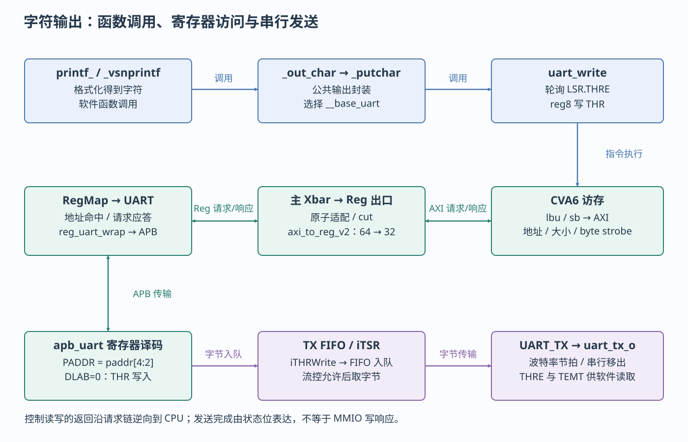
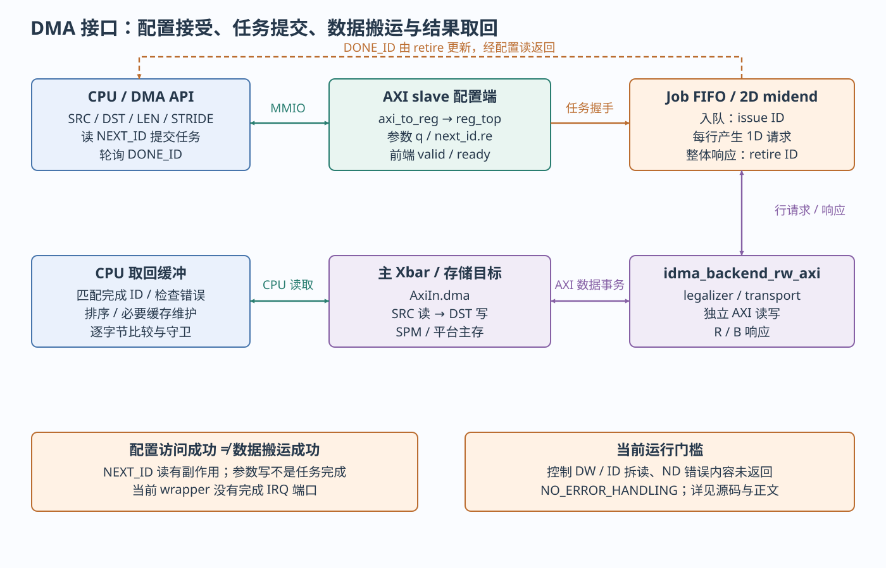

本页目录
以下每个案例都沿软件操作追到实际RTL再返回观察点。图中实线箭头按标签分别表示调用、访存和数据传输，事件虚线另标IRQ；不存在用一根箭头把“调用驱动”直接变成“设备已完成”的省略。
字符输出抵达 UART 发送器
目标和前提。 复用 helloworld.c 或本轮编译的journey；需Cfg.Uart=1、运行存储/栈可用、实际UART频率/引脚和流控一致。uart_init关闭IER，配置DLAB及分频，再恢复8N1并设FIFO/自动流控。DLAB未恢复时写offset0会改分频低字节，不能发送字符。

软件链。 printf.h把printf映射为printf_；printf.c _vsnprintf → _out_char按格式得到字符；uart.c _putchar → uart_write负责发送。它的关键访问为：
while (!__uart_write_ready(uart_base)) ;
*reg8(uart_base, UART_THR_REG_OFFSET) = byte;
__uart_write_ready读取LSR offset20(bit5 THRE)，THR offset0。基址为__base_uart=0x03002000；软件读0x03002014，写0x03002000。本轮编译中uart_write被内联进_putchar；实际机器指令见下方摘录。一次printf的返回不是串行发送完成。
以下摘自本轮 hello.dump 的 _putchar（地址形成指令省略）：
10000246: lbu a5,-558(a5) # 0x03002014：LSR
1000024a: andi a5,a5,32 # bit5 THRE
1000024e: beqz a5,10000242 # 继续等待
10000254: sb a0,-592(a5) # 0x03002000：THR访问和RTL。 CVA6 AXI请求→Xbar Reg出口→原子适配/cut→axi_to_reg_v2→RegMap UART→reg_uart_wrap的i_reg_uart_reg_to_apb→APB。包装传 paddr[4:2]，因此软件偏移每4字节对应一个UART寄存器编号。apb_uart中 iWrite=PSEL && PENABLE && PWRITE；PADDR=0且DLAB=0产生 iTHRWrite，低8位PWDATA经 iTXFIFOWrite写入 UART_TXFF。
状态和完成。 TX FIFO非空且流控允许时，发送状态机取FIFO数据到 iTSR，UART_TX在波特率节拍下产生SOUT，SoC接到uart_tx_o。FIFO空时LSR.THRE置位，!iTXRunning && THRE形成TEMT；uart_write_flush()先fence再等THRE/TEMT。总线B响应、FIFO接受、最后停止位发送是三个时刻。驱动仍保留CVA6读写顺序核查TODO，没有超时，不能当作完整的关钟恢复协议。
观察和排错。 UART文本及SCRATCH2作为软件观察；RTL看Reg地址/valid/ready、APB三控制线、iTHRWrite、FIFO占用、iTXRunning、SOUT。无字符依次查：是否到main→基址/译码→时钟/复位→DLAB/分频→CTS→TX引脚；乱码先核对实际时钟与baud，而非先改printf。HelloWorld会写VS但没有执行向量计算，不作为Ara验收。
定时读取与比较事件
目标和前提。 使用HelloWorld或journey内的 clint_get_core_freq(rtc,2500)理解两种计数：CLINT mtime是MMIO，mcycle是CSR。RTC必须实际跳变，声明的RTC_FREQ须对应硬件，否则测频等待可能挂住或结果错误。
软件/访问。 clint.c clint_get_mtime读 CLINT_MTIME_HIGH/LOW_REG_OFFSET，基址0x02040000，偏移由 clint.h生成；get_mcycle则执行CSR读。频率函数观察RTC边界，计算 (end_mcycle-start_mcycle)*ref_freq/(end_mtime-start_mtime)。FPGA RTC与SoC时钟的生成关系要对照顶层，这不是独立参考仪器测量。
RTL变化。 CPU→Reg桥→CLINT译码→clint_reg_top；clint.sv的i_sync_edge同步RTC上升沿成 increase_timer，通过hw2reg更新mtime。mtime_q >= mtimecmp_q[0]令timer_irq_o[0]有效，SoC接mtip→CVA6 time_irq_i→mip.MTIP。
完成和清除。 单次MMIO读完成不保证64位原子快照，现有高/低两读跨低32位翻转时需重试策略。定时ISR设置下一次mtimecmp到未来解除到期条件，不写PLIC complete；CPU的MTIE/MIE和有效trap处理要先准备。当前sleep_until早退条件有静态问题，所以本轮只将计数读取列为现有可复用路径，定时中断列为待完善验收。
观察和排错。 反汇编应区分mtime的load与mcycle的csrr；调试器看RTC/mtime_q/mtimecmp_q/mtip，再看mie/mstatus/mtvec。恒0/不增长查RTC与复位；中断风暴查比较值是否仍在过去；卡在trap_vector查是否覆盖weak默认。避免用会读清除的外设寄存器替代计数观察。
二维 DMA 从配置提交到结果校验
目标和前提。 复用 dma_2d.spm.c。要求Dma使能、2D前端匹配、SPM与高别名合法，并先关闭控制位宽缺口；当前仅源码分析/编译探针，未声称可直接运行。

软件配置。 dma.h宏 X(sys,&__base_dma)生成 sys_dma_2d_blk_memcpy等函数，写SRC/DST/LENGTH、ND enable、两个stride和reps，随后读NEXT_ID提交，轮询DONE_ID等于返回ID。DMA基址0x01000000是独立AXI slave窗口，不挂主Regbus demux。
| 关键字段 | 生成偏移 | 软件/硬件含义 |
|---|---|---|
| CONF | IDMA_REG64_2D_CONF_REG_OFFSET |
ENABLE_ND等配置；查生成头，不是START位 |
| NEXT_ID_0 / DONE_ID_0 | 0x44 / 0x84 | 32位ID；前者读有提交副作用，后者只表示retire进度 |
| SRC/DST | 对应LOW/HIGH宏 | 物理byte地址组成；受wrapper实际地址位数限制 |
| LENGTH_LOW/HIGH | 0xe0 / 0xe4 | 每行byte数；wrapper有效TfLenWidth=32，不能因有HIGH宏就使用64位长度 |
| DST_STRIDE_2 / SRC_STRIDE_2 | 0xe8/0xec；0xf0/0xf4 | 相邻行起点之差，单位byte，不是行末间隙 |
| REPS_2 | 0xf8/0xfc | 行数；当前midend计数由1起到reps；有效宽度32 |
测试源"This is a DMA test"含19字节（含NUL），传 sizeof(src_cached)-4=15字节/行，dst_stride=7、src_stride=1、reps=4。四行源起点为src+0/1/2/3，目的起点dst+0/7/14/21，每行15字节；目的区域有重叠。最后一行末端为dst+35（不含dst+36），预先放在36/37的!\0用于检查越界，gold字符串为源码中的完整期望值。此例说明stride不必≥length；真实多行重叠写的顺序仍需后端/AXI动态验证。
从写入到搬运。 cheshire_idma_wrap控制AXI→旧axi_to_reg→dma_reg_req→idma_reg64_2d。寄存器q存参数；NEXT_ID读使next_id.re有效，proc_launch置arb_valid；前端与Job FIFO入口valid/ready握手才issue任务ID。FIFO输出经 idma_nd_midend更新每行源/目的地址，向 idma_backend_rw_axi给出1D请求；legalizer组织burst、transport发独立read/write，i_axi_rw_join合成AXI master接 AxiIn.dma，由它完成内存读取和写入。
四种事件必须分开。 参数MMIO被接受≠读NEXT_ID任务入队≠整体ND响应retire≠CPU可见正确结果。2D wrapper以idma_nd_rsp_valid & ready推进DONE_ID，不是任一行完成就推进；wrapper无完成IRQ端口，SoC可选bus-error IRQ也不是DMA DONE。当前backend ErrorCap=NO_ERROR_HANDLING且nd_rsp_o未连接内容，缺少可靠的软件错误结果。
现有缺口。 内部Reg typedef跟AxiDataWidth，当前64位；生成reg_top的DW固定32。HAL把+0x44/+0x84的32位ID转成volatile uint64_t*；本轮探针probe_next/probe_done均生成两条lwu：分别访问+0x44/+0x48、+0x84/+0x88，不能靠类型名reg64证明兼容。普通 sys_dma_memcpy()设置reps=0；在2D wrapper中enable_nd=0也使reps为0，而midend的zero路径抑制burst并生成ND_MIDEND错误响应，wrapper却只计retire。静态推断：即使完成ID变化也可能没有搬运。需S01/V01用独立最小波形确认并另行修复，当前不把普通1D API作为规避2D问题的办法。
可见性。 原测试把源/目的转换到+0x04000000的SPM高别名，并把源值写到该别名，再从同一非缓存别名比较；不能混用缓存别名比较旧副本。API自身没有完整fence/缓存维护/超时闭环；CPU发布写和后续读取的排序需纳入验收。
观察和排错。 先看寄存器实际LOW/HIGH值和byte lane，再看NEXT_ID的re次数/FIFO握手、各行src/dst/length、AXI R/B、ND retire、DONE_ID及gold/sentinel。结果超时不能立即释放缓冲；坏数据先分“配置未接受/无burst/地址错/长度或stride错/传输错误/旧缓存”。修复授权后最小用例从单行、非重叠、短长度开始，再回到原2D重叠例。
GPIO 事件经过 PLIC 进入处理程序
目标和前提。 当前GPIO/PLIC/DIF有实现，但没有检索到根sw/tests中可直接运行的完整GPIO→PLIC C ISR测试。以下是源码支持的完整静态追踪及待补测试步骤，不是声称已运行的新例程。优先用GPIO INTR_TEST注入，避免默认fixture GPIO输入绑零造成无法产生边沿。
软件链。 dif_gpio_autogen.c的 dif_gpio_irq_force写INTR_TEST、dif_gpio_irq_set_enabled设源使能、dif_gpio_irq_acknowledge以W1C清INTR_STATE。PLIC DIF设置priority、target enable/threshold，dif_rv_plic_irq_claim/complete使用目标CC寄存器。基址分别0x03005000和0x04000000；具体偏移来自 gpio_regs.h/rv_plic_regs.h。
访问和事件。 每次DIF写经CPU→AXI→Reg桥→GPIO/PLIC译码。gpio.sv intr_hw消费 reg2hw.intr_test.q/qe、intr_enable.q并更新INTR_STATE；IRQ接 intr.intn.gpio。当前packed结构低位是zero、uart和I²C等，GPIO[0]对应源20；这是从cheshire_int_intr_t的字段顺序静态推导，改变结构后须重算，不把20写成永久平台约定。默认无Router时fanout到PLIC，后者输出M目标xeip到CVA6。
进入和返回。 安装自己的trap_vector→打开目标enable/priority/threshold和CPU MEIE/MIE→注入事件→GPIO state/IRQ置位→PLIC pending→CPU trap→读取mcause识别M external→claim拿到源ID→读取/记录设备原因→acknowledge GPIO对应位→必要排序→complete同一ID→普通C返回→crt0恢复整数现场并mret。硬件INTR_TEST注入绕过外部引脚，但保留寄存器/IRQ/控制器/trap路径。
观察和排错。 后续测试应记录ISR计数恰好加1、claim ID、设备pending清零、complete后无持续重入以及返回主循环标志。先查源是否pending，再查PLIC优先级/enable/threshold、CPU mie/mstatus和mtvec。不要用调试器持续读取CC窗口，它会claim；现有64→32桥邻读还要求单独验证threshold/claim相邻布局。未补齐ISR和该副作用验收前，本例不是默认板测命令。
最小 Ara 加法与标量结果核对
目标和前提。 复用 journey.c+rvv_add.S，硬件向量profile、Ara2/2048、单hart、全128KiB SPM、CSR_ACC_CONS开启。程序静态区在低64KiB，ROM/应用栈必须始终高于物理0x10011000；测试独占物理[0x10010000,0x10011000)，CPU和Ara只使用高别名。
准备与执行。 a/b/c高别名分别为0x14010000/0x14010400/0x14010800；N=137，每槽使用548字节加一个守卫。CPU填a[i]=i、b[i]=2*i+1、c哨值→fence→置VS→调用learn_vadd。每轮vsetvli按剩余数量给vl；CVA6把指令/rs1等交给Ara，VLSU沿独立AXI加载两个数组，lane执行vadd，再写c。
完成与消费。 专用响应/在途计数及barrier配合函数返回后的fence；CPU从同一高别名读c，逐元素比较3*i+1，核对输入未改和边界守卫，总和应为28085。开启JOURNEY_DEPTH还运行长度0/1/63/64/65/137和归约，覆盖部分尾部边界；这不是全部RVV ISA验证。
运行、观察与排错。 本轮已重编RVV ELF并看到vsetvli/vle32/vadd/vse32，不代表Ara执行通过。目标运行应记录 RVV_DEPTH cases=6 errors=0、LEARN sum=28085 errors=0及退出码，检查无访问/非法指令异常。非法指令先查profile/stub/VS/FS，挂起查专用ready和pending，坏结果查物理别名、vl指针增量、缓冲所有权与AXI响应；只有日志而无逐元素断言不算算法验收。
从接口行为回到可复用的软件服务
本页关注软件操作到RTL的链条。新增基础软件章用同一UART实例解释printf、控制台回调与DIF的分工，并以GPT回调、Flash HAL和SPI DIF说明初始化、参数单位及错误传播。HAL/DIF是实现接口使用的代码，不是每次操作都必须经过的统一阶梯。